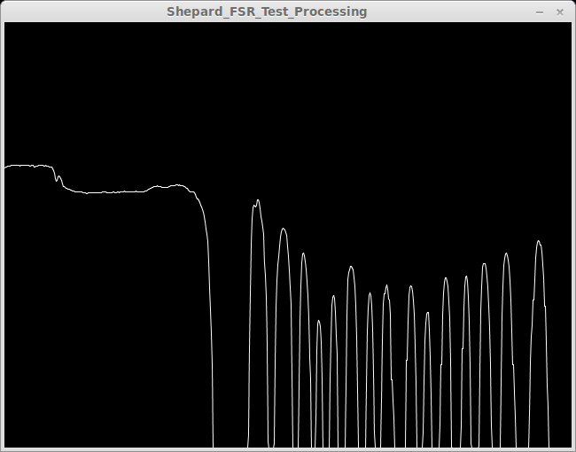
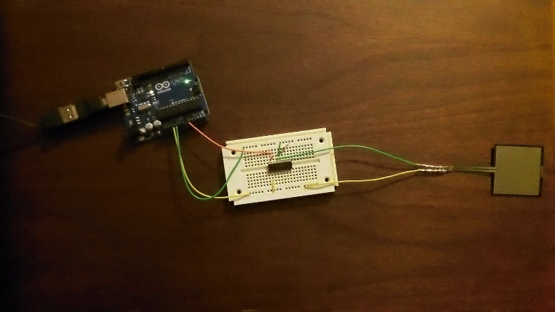
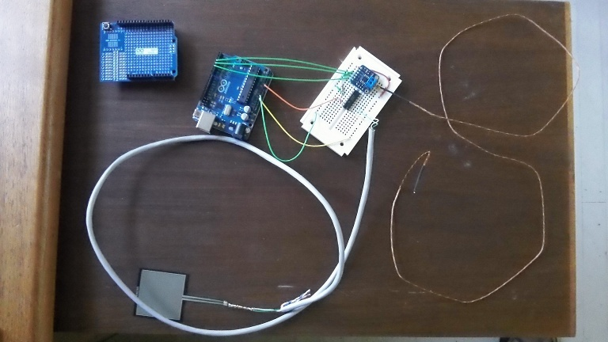

Forums » Discussion »
v1.0 - SEP Step 4 - Preliminary Design - Data Acquisition (DAQ)
Added by Jeremy Wright over 10 years ago
As I mentioned in the mechanical discussion, this is the other major section in the block diagram. To get things rolling on this DAQ discussion I've posted all of the discussions with related content below. If I've missed any please post them here.
The Resources discussion (good idea to review this for ideas and materials)
The Hardware compatibility discussion
The Block diagram discussion (Ben mentions signal conditioning, and thermocouple connectors at the bottom)
And of course the Requirements document has to guide all of the decisions.
It's my understanding that the Arduino Uno has always been the favored DAQ base, so I guess that makes the load cell, thermocouple, and their signal conditioning systems the first major choices. I know that Ben has some thoughts on these items.
Replies (10)
RE: v1.0 - SEP Step 4 - Preliminary Design - Data Acquisition (DAQ) - Added by Jeremy Wright over 10 years ago
This would probably end up being its own project if it's a good idea, but I wondered about turning at least part of the analysis and reduction software into a web service. We would still have an offline (lite) version of the software for when people are in the field, but the web service would allow them to upload their data to share with everyone else who's running a Shepard Test Stand. Maybe the web service could do a more in-depth job with analysis and charting?
That's just a thought that came to me. It would be nice to make it easy for all the Shepard users to share and compare their data. That would also be a good opportunity for gamification.
RE: v1.0 - SEP Step 4 - Preliminary Design - Data Acquisition (DAQ) - Added by Greg Moran over 10 years ago
for a tutorial on force sensing resistors see this link on the adafruit learning system:
http://learn.adafruit.com/force-sensitive-resistor-fsr
RE: v1.0 - SEP Step 4 - Preliminary Design - Data Acquisition (DAQ) - Added by Jeremy Wright about 10 years ago
I've updated the DAQ's preliminary design info in the wiki.
https://opendesignengine.net/projects/shepard-ts/wiki/Preliminary_Design_v1_0
Down in the DAQ section (towards the bottom) you'll see a table with a cost estimate.
RE: v1.0 - SEP Step 4 - Preliminary Design - Data Acquisition (DAQ) - Added by Jeremy Wright about 10 years ago
I've been able to get the Arduino to send data from the Force Sensing Resistor (FSR) to a laptop running a simple Processing app. The next step will be to go through the Adafruit tutorial to see what we need to do to make the FSR useful and to check hysteresis, etc.
This link , that's also in the wiki, shows the basics of getting this setup up and running.
For those like me running Linux (specifically Ubuntu or one of it's variants), the info in the "Ubuntu" section of this page has information you'll need to get Processing set up to where it will communicate over a serial port. Swapping the RXTXcomm.jar files as shown was the only way I could get serial communications to work.
Lastly, I had some trouble getting the code checked in to Shepard's SVN repository, so I uploaded the files (1 Arduino and 1 Processing) to DMSF. You can find those files here . These files need to be put in the repository soon, but I wanted to get the code out to other project members ASAP.

The Processing app on a laptop showing the raw voltage data as I applied force to the FSR.

The Arduino wiring that made the wavy line in the last image possible.
Processing_App_Shepard_FSR_Test_08_19_12.png (20 kB)
{kind=link}
FSR_Arduino_Wiring.JPG (95.8 kB)
{kind=link}
RE: v1.0 - SEP Step 4 - Preliminary Design - Data Acquisition (DAQ) - Added by Jeremy Wright about 10 years ago
The following is a conversation that I started in Google+ discussing the Force Sensing Resistors (FSRs). I've copied it here so that we don't lose any documentation. Future comments on this post will be added here as well.
+Blaze Sanders - This tutorial on Force Sensing Resistors from Adafruit talks about FSRs being "a bad choice for detecting exactly how many pounds of weight are on them". The question that presents us with is how accurate and repeatable are they, and are we willing to accept that accuracy even if it means backing down on our original design requirements. http://bit.ly/NJyX9d
+J. Simmons - The force range of an FSR is spec'd assuming even weight distributed over the contact area. If I'm reading the tutorial right, the contact area would be everything inside of the black spacer layer that you can see as a border around the outside. You can see the same border on the FSR I'm currently testing. http://bit.ly/Q6Rn3J
RE: v1.0 - SEP Step 4 - Preliminary Design - Data Acquisition (DAQ) - Added by Jeremy Wright about 10 years ago
For the data acquisition pricing sheet towards the bottom of the page here , I found a thermocouple at Adafruit that would work. The one that was on the sheet before was from SparkFun and was about $4.00 more expensive. I also included separate shipping for the thermocouple amplifier and the thermocouple, but since they are both shipped from Adafruit you can combine the shipping charges into one (their combined weight is below the weight for a rate jump).
RE: v1.0 - SEP Step 4 - Preliminary Design - Data Acquisition (DAQ) - Added by Jeremy Wright about 10 years ago
I found a note this morning that I wanted to capture here. I talked via phone with John from the NAR (National Association of Rocketry) Standards and Testing Group, and he said that he uses an AD852x series instrumentation amplifier with their load cells and adjusts the gain to "fill" the resolution of their ADC. The other option of course is just to get a higher resolution ADC.
RE: v1.0 - SEP Step 4 - Preliminary Design - Data Acquisition (DAQ) - Added by Jeremy Wright about 10 years ago
Ok, my FSR testing code is now in the SVN repository for anyone who wants to experiment with it.
https://opendesignengine.net/projects/shepard-ts/repository
I didn't worry too much about creating the proper directory structure at this point. When we get into writing the main application I'll set things up in a more standard way.
RE: v1.0 - SEP Step 4 - Preliminary Design - Data Acquisition (DAQ) - Added by Jeremy Wright about 10 years ago
Here's info on our first integration test using the FSR (Force Sensing Resistor).
https://opendesignengine.net/boards/4/topics/217?r=218
Even though we're testing now, I feel like this is still covered under preliminary design since the thrust sensor isn't set in stone. If the FSR fails in areas of testing like repeatability we'll have to fall back to a more expensive load cell configuration.
RE: v1.0 - SEP Step 4 - Preliminary Design - Data Acquisition (DAQ) - Added by Jeremy Wright about 10 years ago
It looks like a mess, but it works. We now get thrust and temperature measurements. In the upper left corner of the picture you'll see an Arduino Proto Shield. I'm going to attempt to combine everything onto that so we'll have a clean implementation. Again, Radio Shack carries the Arduino and several shields/accessories now. That's where I got both the Arduino Uno and the Proto Shield.

There are two main flaws with the DAQ system right now. The second is due in large part to the first.
1. The sample rate of the Arduino-to-serial-to-PC system is slow. I'm not sure how slow exactly yet, but I don't see any way that we'll even meet the 500 samples per second design requirement. There may be some Arduino experts out there who could squeeze out more performance, but I don't think that the Arduino is going to be capable of 1000 samples per second for our setup. Switching to C for the programming language and using a data logger shield might be two options to help deal with this.
2. I'm cheating on the data's time stamp. I had problems getting a reliable stamp from the Arduino to the computer, so I'm using the time when the data comes across the serial line to the PC. Ideally of course we want the time stamp matched to the data on whatever is acquiring the data (the Arduino). It's possible that this issue can be resolved with some more work (and a data logger shield), but with the OHS deadline looming I'm going to call it "good enough" for now.
Shepard_DAQ_Prototype.JPG (106.2 kB)
{kind=link}
(1-10/10)